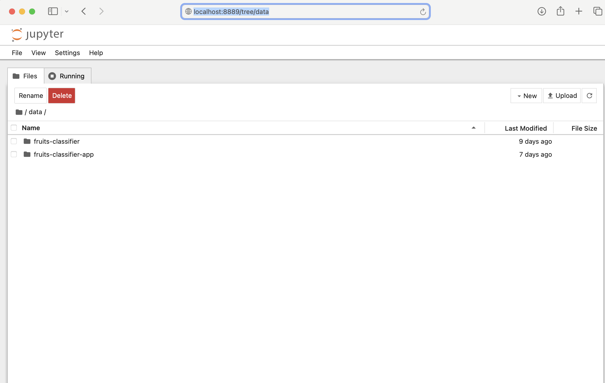

My deep learning journey accelerated when my friend and a former comrade (thank you, Martin Chiteri) pointed me to the famous Practical Deep Learning for Coders course from Fast.ai - a free online course that will teach you how to apply practical deep learning and machine learning to train fast and accurate neural nerworks. The course is based on an equally great book Deep Learning for Coders with fastai and PyTorch (also freely available online).
fastai is a machine learning library built on top of PyTorch that provides a consitent interface to the most frequently used deep learning applications. It is extensively documented - see Resources section for links to important material.
In this guide, I share my experience setting up fastai on MacOS (with Apple silicon) and show you how to get started with development quickly.
You can install fastai on your own machines with conda (highly recommended), as long as you’re running Linux or Windows (NB: Mac is not supported). - FastAI Docs
Installation of fastai on MacOS is not supported. The good news, you can use fastai without installing it in your local machine - this is possible on Google Colab or Kaggle platforms.
Often, I want to be able to work on projects locally. A good option is to use docker containers. I opted to setup a container enviroment.
Setting up a docker container
Docker helps developers build, share, run, and verify applications anywhere — without tedious environment configuration or management.
In a terminal, I downloaded and installed Docker Desktop for Mac(with Apple silicon) in the Applications folder.
Beginning version 4.3.0, Docker removed the hard requirement to install Rosetta 2 (but still recommend it to get the best experience).
% wget https://desktop.docker.com/mac/main/arm64/Docker.dmg
% softwareupdate --install-rosetta
% sudo hdiutil attach Docker.dmg
% sudo /Volumes/Docker/Docker.app/Contents/MacOS/install --accept-license --user=<username>
% sudo hdiutil detach /Volumes/DockerNext, grabbed the latest ubuntu image from Docker Hub.
% docker pull ubuntuCreated and launched a new container in interactive mode.
% sudo docker run -it —name fastai-deep-learning ubuntu /bin/bashI now have access to an interactive shell inside the container. Rest of the commands in this and the next section are executed inside the container.
Update apt and install necessary utility packages
% apt update && apt install wget unzip apt-utilsThe ubuntu ARM64 (M1) base image downloaded and used above (unless a different –platform is specified in a build call if you decide to build a fresh image) does not come pre-populated with x86 shared objects. I had to install these and link them appropriately. Otherwise, I kept getting this error message: qemu-x86_64: Could not open '/lib64/ld-linux-x86-64.so.2': No such file or directory.
% apt install -y libc6-amd64-cross libstdc++6-amd64-cross
% ln -s /usr/x86_64-linux-gnu/lib/*.so.* /lib
% ln -s /usr/x86_64-linux-gnu/lib64/ /lib64Installing fastai
Following the fastai docs, I downloaded and installed miniconda.
% mkdir -p ~/miniconda3
% wget https://repo.anaconda.com/miniconda/Miniconda3-latest-Linux-x86_64.sh -O ~/miniconda3/miniconda.sh
% bash ~/miniconda3/miniconda.sh -b -u -p ~/miniconda3
% rm -rf ~/miniconda3/miniconda.shInstall pip.
% sudo apt install python3-pipInstall pytorch.
% conda install pytorch torchvision torchaudio cpuonly -c pytorchFinally, install fastai.
% conda install -c fastai fastaiCreate a new docker image
docker ps -a lists all containers. I located my container (fastai-deep-learning created above) and copied the container ID. Saved the container’s configuration and setup to a new image fastai-dl using docker’s container commit. I finally confirmed my newly created image exists using docker images.
fastai-dl image can be used for spinning a new ready-to-use container for fastai development on MacOS.
% docker ps -a
% docker container commit -p CONTAINER_ID fastai-dl
% docker imagesStart developing - Using JupyterLab inside a docker container
JupyterLab is the latest web-based interactive development environment for notebooks, code, and data.
I use Jupyter notebooks for most of my deep learning development work. My local project notebooks should be accessible inside the docker enviroment and loaded by Jupyter.
To achieve this, I launched a new docker container (with an interactive shell) attaching my local project folder as a volume using -v ~/Dev/deep-learning:/data (local folder ~/Dev/deep-learning syncs to /data folder in the container). I mapped ports using -p 8889:8888 (local port 8889 maps to the container’s jupyter instance running on port 8888).
% docker run -it -p 8889:8888 -v ~/Dev/deep-learning:/data --name CONTAINER_NAME fastai-dl /bin/bashOnce inside the container I launched jupyter using the following command:
% jupyter notebook --ip 0.0.0.0 --no-browserVoila! I could access jupyter locally at https://localhost:8889.

You can access and download a ready-to-use docker image to kickstart your fastai development on MacOS, or setup a clean environment by following this guide.
Happy building!